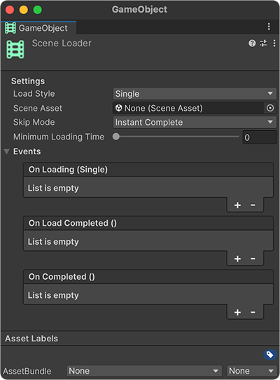
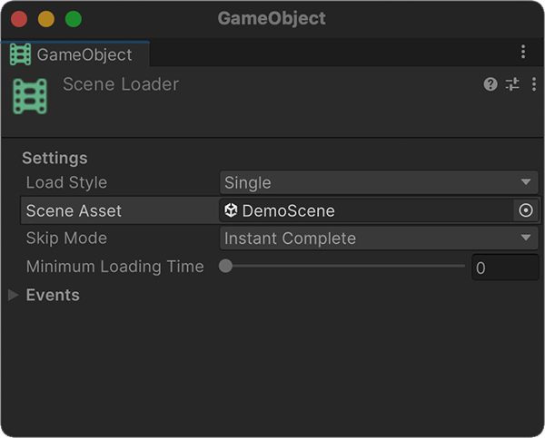
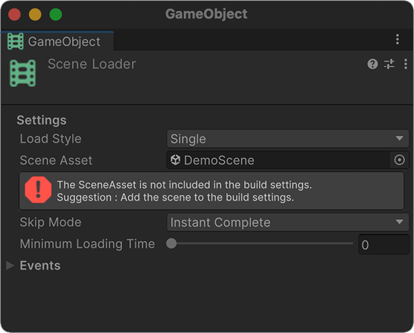
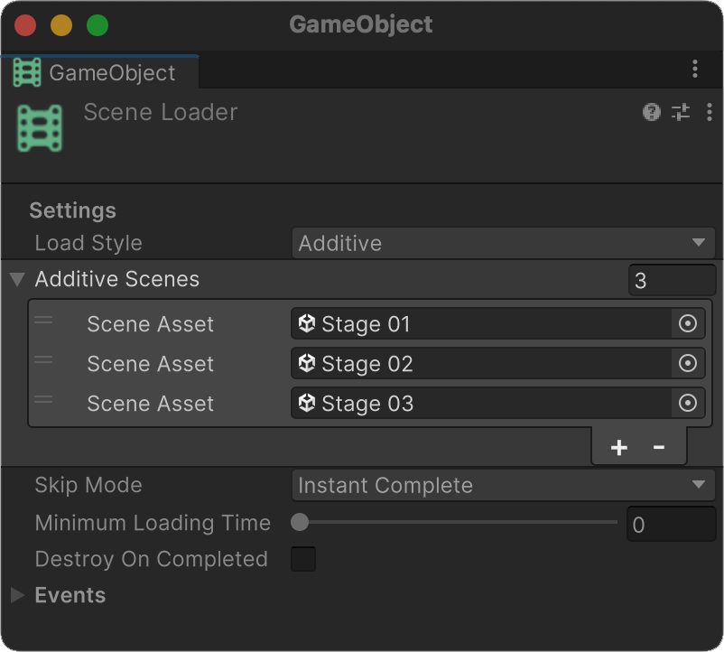

Scene Loader
Scene Loader is a component used to load scenes.
Additionally, thanks to its ability to load scenes, it can also be used to implement loading screens.
Setting

Click Add Component on the empty object to add a Scene Loader component.

Refer to the scene you want to move to Scene Asset.

If the added scene does not exist in the Build Setting, an error message is displayed.
Load Style
Load Styles include Single and Additive.
Additive Style allows multiple scenes to be loaded simultaneously.
Skip Mode
Set the behavior when loading is completed.
| SkipMode | Behavior |
|---|---|
| Instant Complete | Activates the next scene immediately after loading completes. |
| Any Key | Activates the next scene when any key is pressed after loading is complete. |
| Manual | After loading is complete, manually activate the next scene from Script. |
Other Settings
Minimum Loading Time
Sets the minimum amount of time used to navigate to a scene after loading it.
Destroy On Completed
If set to true, the Scene Loader object will be destroyed after loading is complete.
Tip
'Destroy On Completed' is useful when configuring an Additive Style or Load Scene.
Events
On Loading (Single)
Called while loading.
On Load Completed
Called when the scene has finished loading.
On Completed
Called when the scene has finished loading and the scene has been activated.